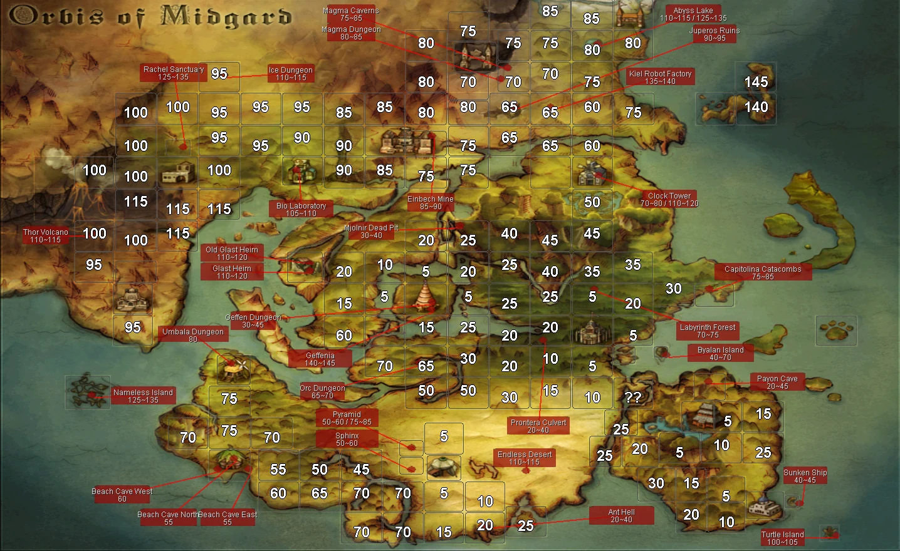

1 to 15
- Fields south and east of Prontera5
- Fields around Payon and Alberta5 to 15
- Fields west of Prontera5 to 10
- Fields around Morroc5 to 10
First time here
Every class, skill, item and monster on this server was remade, so what you remember from anywhere else is a rough guide at best. This page collects routes and advice from people who have already walked it.
Before anything else
Every field and every dungeon floor has a level printed on it. You just have to turn it on, and once you have, you rarely need a guide at all.
Opens the world map, wherever you are standing.
Then this switches the level numbers on, one per map.

Hunting above your level pays more. Three levels above the monster and you are already earning a bonus, and it keeps climbing to ten levels above.
Never let the gap reach 15 in either direction. Fifteen levels above the monster pays you nothing at all, and fifteen below cuts what you earn by 90%. Both ends of that are a wasted evening.
Quick reference
The whole world on one screen. Find your level, pick anything in the box, go. The longer route below says what is worth picking up once you are there.
Dungeon levels are the ones printed on the world map, and a dungeon usually climbs across its floors, so the top floor is the low end of the range. Field levels are what the maps around that town read.
Levelling route
Where to go at each level band, what to pick up while you are there, and which altars sit close enough to be worth a detour. Cards, gear and altars are read straight out of the item database, so they match what is on the server.
Monster lists cover what the sheets tie to each area, not every spawn on the map. Drop rates are on the database page: gear off ordinary monsters lands at 1 to 5%, cards at 1%.
Get moving. Kill whatever is in front of you until you have your first job.
| Poring | Accessory | Adds 40% Resistance to Bleeding |
| Lunatic | Any slot | Luk +1 / If Base Luk is 50 or higher, adds an additional Luk +1 / If Base Luk is 90 or higher, adds an additional Luk +1 |
| Fabre | Any slot | Vit +1 / If Base Vit is 50 or higher, adds an additional Vit +1 / If Base Vit is 90 or higher, adds an additional Vit +1 |
| Pupa | Armour | Adds a chance of autocasting Heal on self when taking damage |
| Chonchon | Accessory | Sleep Resist +40% |
| Willow | Headgear | SP Consumption -10% |
| Rocker | Headgear | Hit +15 |
Who wants this stop Everyone. The Lunatic and Fabre cards grow with the stat you are already stacking, so they stay useful well past this field.
The Creamy card, and 10 Red Herb while you are there.
| Creamy | Accessory | Increases the learned level of Warp Portal by 1 |
| Creamy Fear | Accessory | Removes the gemstone cost of Warp Portal |
| Poporing | Accessory | Adds 40% Resistance to Poison |
| Coco | Shoes | HP Regeneration +25% |
| Vocal | Accessory | Skill casting can't be interrupted. |
| Gullinbursti | Shield | Enables use of Lash Out Lv 5 |
Who wants this stop Anyone who casts. Creamy raises Warp Portal by a level and Creamy Fear drops its gemstone cost entirely.
The champions on these fields drop the gems that open the Doppelganger altar later, so nothing you pick up here is wasted.
30 Grape. That is a Grape Juice, which is the bottom of the SP potion ladder.
Who wants this stop Anything that runs on SP. The Grape Juice recipe also wants 10 Ant Jaw and 10 Golden Hair, both of which are on the next two stops.
10 Ant Jaw and 30 Yellow Herb.
| Andre | Weapon | Hit +10 / Combo (Andre + Piere + Deniro): Atk +10 / Combo (Andre + Piere + Deniro): Hit +10 / Combo (Andre + Piere + Deniro): ASPD +1 |
| Piere | Weapon | ASPD +1 / Combo (Andre + Piere + Deniro): Atk +10 / Combo (Andre + Piere + Deniro): Hit +10 / Combo (Andre + Piere + Deniro): ASPD +1 |
| Deniro | Weapon | ATK +10 / Combo (Andre + Piere + Deniro): Atk +10 / Combo (Andre + Piere + Deniro): Hit +10 / Combo (Andre + Piere + Deniro): ASPD +1 |
| Vitata | Accessory | Regenerates 100 HP every 10 seconds / Combo (Vitata Card + 3 Ants): Atk +10 / Combo (Vitata Card + 3 Ants): Hit +10 / Combo (Vitata Card + 3 Ants): ASPD +1 |
| Giearth | Weapon | Add a 5% chance to autocast Crush Lv1 when attacking |
| Ant Egg | Armour | Adds a chance to autocast Backslide when taking damage |
| Familiar | Garment | Flee +15 |
| Maya Purple | Accessory | Slash has a high chance to autocast Bloodbath / Envenom has a high chance to autocast Toxic Burst / Sand Attack has a high chance to autocast Blinding Pulse / Combo (Maya Purple Card + 3 Soldiers): Atk +5% / Combo (Maya Purple Card + 3 Soldiers): Matk +5% / Combo (Maya Purple Card + 3 Soldiers): Damage taken -5% |
Who wants this stop Melee, and anyone who wants a set. The three Ant cards combo with each other, the three Soldier cards combo with each other, and Maya Purple spreads Slash, Envenom and Sand Attack across an area.
Maya's altar wants 75 Ant Jaw, which is the same drop you are already farming for the Grape Juice.
10 Golden Hair, the last piece of the Grape Juice recipe.
| Jakk | Weapon | Magic Damage to Demon Race enemies +10% |
| Marionette | Weapon | Increase physical damage dealt to Ghost Property monsters by 20% |
| Deviruchi | Headgear | Add a high chance to inflict the Blind status on enemies when attacking / Add a high chance of receiving the Blind status when taking damage |
| Nightmare | Headgear | Gain 500 HP and 50 SP when killing an enemy by physical or magical attack |
| Zombie Master | Garment | Increase physical attack against Undead property monsters by 15% / Reduce damage received from Undead property attacks by 15% |
| Mini Demon | Headgear | Default EXP Penalty on death is removed. / (This item must be equipped for 10 seconds before this effect activates) / Max HP/Max SP -30% |
Who wants this stop Ghost and undead hunters. Marionette adds physical damage to ghosts, Zombie Master swings damage both ways against undead.
Everything Dracula's altar asks for drops on these floors, so the boss is reachable while you are still levelling here.
Level, and start collecting for the two altars nearby.
| Mistress | Headgear | Reduces the Cooldown of Heal and Aid Potion by 3 seconds / (Multiple copies of this card do not stack) |
| Kublin | Headgear | Increases the potency of Vulnerable inflicted by the user by 30% / (Multiple copies of this card do not stack) |
Who wants this stop Healers first. The Mistress card takes three seconds off both Heal and Aid Potion, and her gear leans the same way.
Kublin's champion drops include the Gnome's Moustache the Concentration Potion recipe asks for.
One card per colour, and the pieces for the Nightmare Pitaya altar.
| Green Pitaya | Armour | Vit +1 / Max HP +5% |
| Red Pitaya | Garment | Str +1 / Atk +5 |
| Yellow Pitaya | Headgear | Int +1 / Matk +5 |
| Violet Pitaya | Shoes | Agi +1 / Flee +5 |
| Angeling | Garment | Holy Resistance +50% / Dark Resistance -50% |
| Plateau Colossus | Shield | Magic Damage Taken -15% |
| Goat | Armour | Chilled Resist +50% / Increase damage taken from the Burning status by 25% |
| Harpy | Headgear | Rogue Classes Only: Increase the learned level of Predatory Instinct by 1 / Rogue Classes Only: Removes the Predatory Instinct status when unequipped |
| Sleeper | Accessory | Sand Attack has a 30% chance of inflicting the Sleep status |
Who wants this stop Everyone, whatever you rolled. Each colour is a different stat, so you take the one your build already wants, and the Nightmare Pitaya card triples whichever ones you are wearing.
A long stop. Four altars sit on these maps.
| Orc Warrior | Accessory | Adds 40% Resistance to Vulnerable |
| Orc Lady | Shield | Reduce damage taken from Demihuman race by 25% |
| Orc Zombie | Shield | Reduce damage taken from Undead race enemies by 25% |
| Zenorc | Weapon | Magic Damage to Demihuman Race enemies +10% |
| Orc Baby | Garment | Neutral Resistance +2% per refine / Flee +2 per refine |
| Orc Hero | Armour | Adds a chance to autocast Deafening Roar Lv 5 when taking damage |
| Kobold | Accessory | Hit +3% / ASPD +1 |
| Kobold Archer | Weapon | If a Bow is equipped: ASPD +5 / If a Bow is equipped: (Multiple copies of this card do not stack) |
Who wants this stop Two handed weapons want the Kobold Warchief card. Anything that stacks HP and does not lean on skills wants Orc Lord, since the SP cost it adds hurts casters far more.
The Orc Lord altar only asks for the two champion drops off these same fields, Nursing Bottle and Orc Trophy.
Burning gear, and the Muspellskoll altar.
| Magmaring | Accessory | Physical Damage to Burning enemies +10% |
| Green Ferus | Accessory | Vulnerable Potency +10% |
| Blazer | Shield | Reduces damage taken from the Burning status effect by 30% |
| Explosion | Garment | Enables use of Reposition Lv3 / Inflict Burning on self when casting Reposition |
| Kaho | Weapon | Increases damage dealt by the Burning status by 15% |
| Imp | Accessory | Magical Damage to Burning enemies +10% |
| Lava Golem | Armour | Reduces damage taken from the Burning status effect by 75% |
| Earth Deleter | Shield | Reduce damage taken from Dragon race by 25% |
| Sky Deleter | Weapon | Magic Damage to Dragon Race enemies +10% |
Who wants this stop Anything that burns. Kaho and Magmaring push burning damage, Lava Golem and Blazer take it off you, which matters because half the floor is fire.
mag_deep04 is a Nightmare dungeon. Do not walk in on the way past.
The longest single stop on the route.
| Venatu | Any slot | Sleep and Slow Resist +20% |
| Dimik | Headgear | If a Rifle is equipped: Fixed Cast Time -1s |
| Apocalypse | Armour | Max HP +10% / Immune to Knockback |
| Archdam | Shoes | Max SP +10% / SP Regen +50% |
Who wants this stop Gunners and casters. Dimik cuts a full second of fixed cast off a rifle, Archdam is SP, Apocalypse is HP and no knockback.
Farm the boss itself. Its altar wants 25 of each Crest Piece, all four of which drop in the floors above.
| Vesper | Weapon | Enchants weapon with the Wind Property / Wind Magic Damage +20% / (This card's effects do not stack) |
Who wants this stop Elemental casters. The Vesper card turns your weapon wind and adds 30% wind magic damage, and the rest of the set is a resistance and movement package.
Job change
You get your first job inside the tutorial at level 1. The choice that matters comes at job level 50, and nobody tells you where to go for it.
| Knight | Prontera Chivalry, the top left corner of town |
| Crusader | Prontera Church, the left room |
| Blacksmith | The Blacksmith's Guild, bottom right of Geffen |
| Alchemist | The Alchemist's Guild, bottom left of Aldebaran |
| Assassin | The Assassin's Guild, on Morroc field 16 |
| Rogue | The Old Thief's Guild, in the first basement of the Morroc pyramid |
| Hunter | The Old Archer's Guild, top right of Payon's archer village |
| Bard and Dancer | The Comodo stage, in the middle of town. Take the NPC in the Morroc ruins past St. Darmain's Fortress, then run |
| Wizard | The top level of Geffen Tower |
| Sage | Sage Castle in Juno. The NPC on the middle floor of Geffen Tower will warp a Mage there, and you should let it |
| Priest | Prontera Church, the right room |
| Monk | Capitolina Abbey, inside the building at the bottom right. Someone is enjoying the flowers by the entrance |
| Star Gladiator | Geffen field 5 |
| Soul Linker | Capitolina Abbey, outdoors |
This page will keep growing. More routes, starting builds and class by class advice are on the way. If you want to write one, the Discord is the place.
Make an account, grab the client, and come and see what changed.